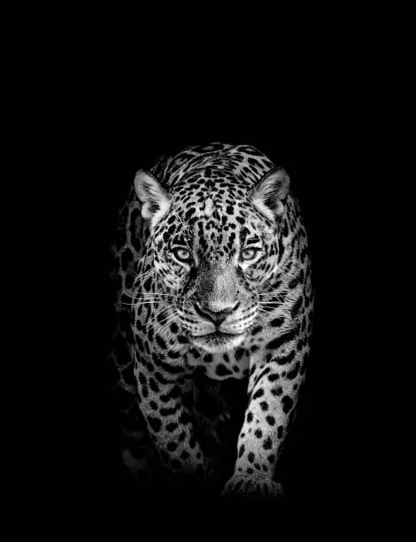
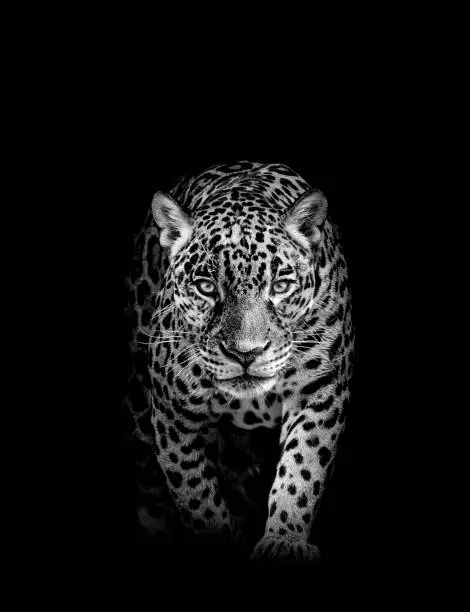

Crafting Visual Narratives
A portfolio showcasing a blend of commercial and fine-art photography, focusing on capturing the authentic story,light,and emotion in every frame.
View Featured GalleryThe Vision & Philosophy
I specialize in commissioned projects that require a unique artistic eye, including high-end portraiture, architectural studies, and remote landscape expeditions. My goal is always to deliver images that resonate deeply and stand the test of time.
15+
Years of Professional Experience
4 Continent
Travel & Documentary Work
100%
Client Satissfaction Rate
Featured Collections
portraiture
Bespoke studio and environmental portraits for private clients and editorial features. Focused on authenticity.
Architecture
Detailed studies of structure and light, capturing commercial and residential spaces with cinematic precision.
Wild
Expeditionary work capturing raw, untamed landscapes and nature, emphasizing scale and mood in challenging locations.
Selected Works
A small selection from my recent collections, demonstrating technical skill and artistic range.


 


“Photography is the art of seeing.”
Photography is the art of seeing.
Print Inquires
Many of the fine-art images displayed in my full catalog are available as limited-edition prints on archival paper. Please contact me directly if you are interested in purchasing a piece for your home or collection.
Licensing
For commercial use, including advertising and publishing, all images are available for licensing with agreed-upon terms. Use the form in the booking section for specific licensing questions.
Inspiration
Portrait: Idea for portrait photos
Landscape: Idea for Landscape photos
Seascape: Idea for Seascape photos
Abstract: Idea for Abstract photos
Product: Idea for product photos
Ready to create?
Let's discuss your next project, whether it's a private portrait session, a corporate assignment, or an inquiry about fine art prints.